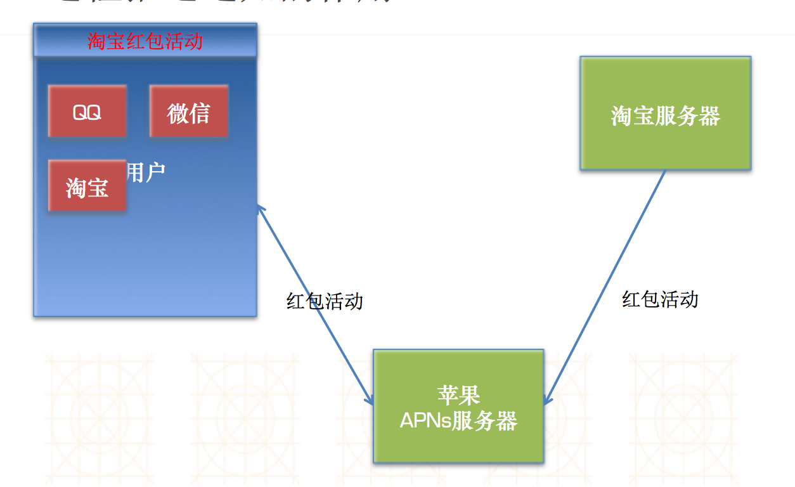
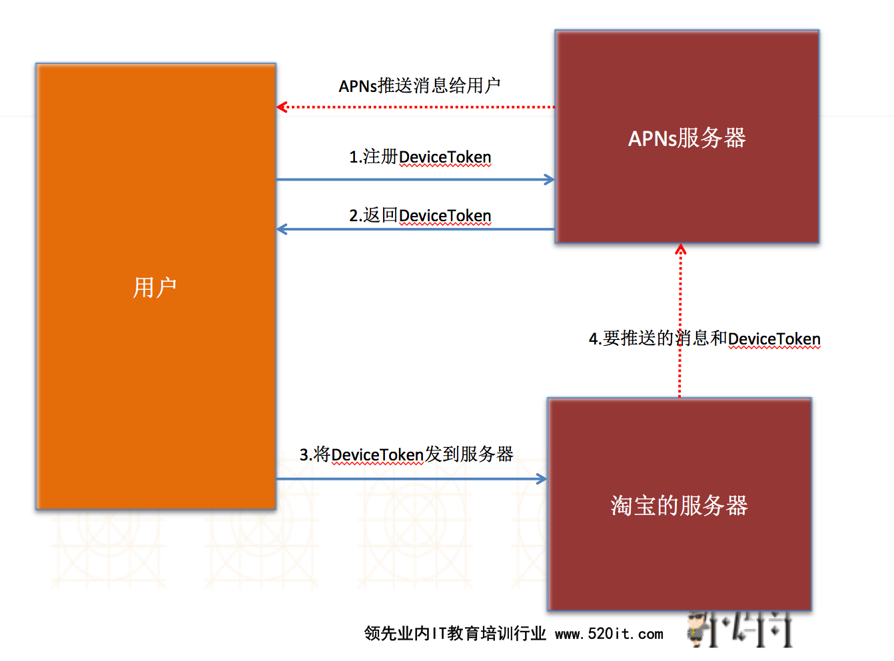

远程通知
一.什么是远程通知
- 概念:由服务器发送消息给用户弹出消息的通知(需要联网)
- 远程推送服务，又称为APNs（Apple Push Notification Services）
二.为什么需要远程通知
- 例子:淘宝最近双11搞活动,各种送红包,想告知用户.但是该用户不经常打包淘宝APP.淘宝如何通知该用户有最新的活动呢?
- 传统方式:只有用户打开了淘宝客户端,客户端向服务器请求是否有最新的活动,才能在APP中告知用户活动.
- 局限性:只要用户关闭了app，就无法跟app的服务器沟通，无法从服务器上获得最新的数据内容
- 远程通知的好处:不管用户打开还是关闭app，只要联网了，都能接收到服务器推送的远程通知
三.远程通知的原理
- 原理图

- 为什么淘宝服务器不直接推消息给用户?
- 在通常情况下服务器端是不能主动向客户端推消息的.
- 如果想服务器端给客户端推消息,必须建立长连接
- 淘宝客户端在处于后台时不能和服务器端建立长连接
- 为什么苹果服务器可以推消息给用户?
- 所有的苹果设备，在联网状态下，都会与苹果的服务器建立长连接
- 苹果建立长连接的作用:
- 时间校准
- 系统升级提示
- 查找我的iPhone
- 远程通知
- ...
- 疑惑:苹果在推送消息时,如何准确的推送给某一个用户,并且知道是哪一个APP?
- 在淘宝服务器把消息给苹果的APNs服务器时,必须告知苹果DeviceToken
- 什么是DeviceToken?
- DeviceToken是由用户手机的UDID和应用程序的BundleID共同生成的
- 通过DeviceToken可以找到唯一手机中的唯一应用程序
- 如何获得DeviceToken?
- 完整的流程图

四.如何做远程通知
- 首先,BundleID对应的APPID必须是明确的(特殊功能)
- 该APPID必须配置两个证书
- 开发证书:用于调试远程推送
- 发布证书:用于发布后给用户推送消息
- 根据上面的APPID重新配置描述文件
- 安装对应的证书,即可开始测试远程推送